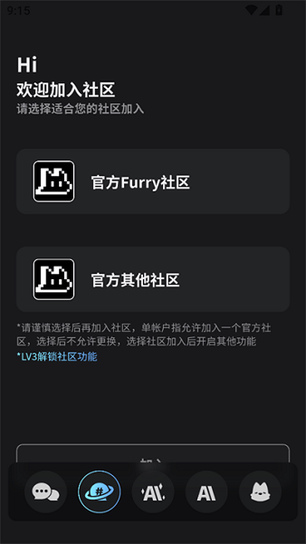
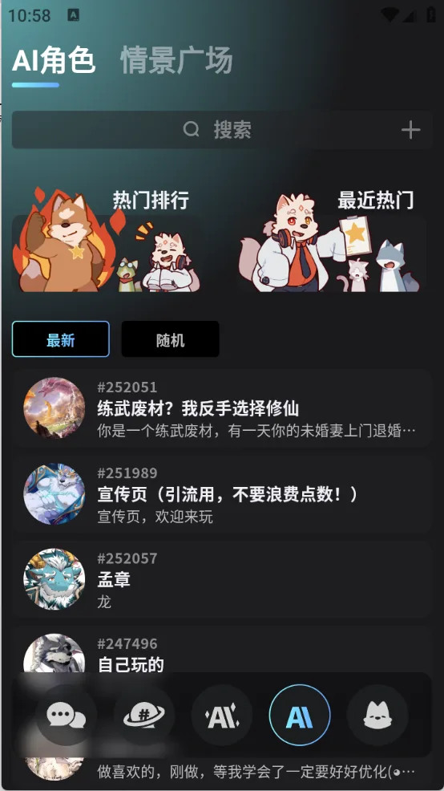

从零玩转 FurryBar：第一次接触 AI 角色互动怎么上手
完全没接触过这类软件也没关系，这篇带你从下载到第一次跑通对话，再到体验浪漫剧本和冒险剧情，轻松入门。
这篇能带你从完全不懂到把 FurryBar 用起来——不需要任何 AI 工具或角色扮演的基础，跟着点就行。
它到底是干嘛的？用一个生活化类比讲明白
逛一眼FurryBar官网，你就知道角色库的阵容有多丰富了。你可以把 FurryBar 想象成一个"有记忆的角色剧本屋"。平时你看剧，角色说什么做什么都写好了；但在这里，你面前的每个兽设角色（比如狼族剑客、布偶猫咒术师）都是活的——你说的每句话、做的每个选择，角色都会记住并据此回应。它不像普通聊天机器人那样一问一答干巴巴的，更像是住进了一个剧本里，剧本的走向由你和角色一起决定。
核心玩法就两块：一是找你喜欢的角色聊天，二是进入预设的冒险剧情当主角。两块都有"深度记忆引擎"托底——上次聊到它的家乡在下雪，下次开口它会接这个话题，不会像换了个人似的。

五分钟上手：从下载安装到第一次跑通
别担心，整个过程就是下载 → 装 → 登 → 选角色 → 开口，五步走完。
第一步，把安装包拿到手。从下载拿就行，手机上打开就能看到对应平台的安装指引，跟着提示装就行。装好之后点开应用，先做账号绑定——手机号或者邮箱二选一，选你常用的那个，后面换机或换设备要靠它同步数据。
第二步，进角色大厅。首页默认就是角色广场，上面按分类排了一堆角色卡：日常闲聊的、冒险剧情的、浪漫向的、战斗向的……点进任意一张卡片，先看介绍页面——每个角色都有性格标签、背景故事、主动度参数（主动度高的会更主动搭话，主动度低的需要你多带节奏）。选一个你看着顺眼的，点"开始互动"。
第三步，开口说第一句话。界面中央是对话框，底部有输入框。别纠结说什么，随便打一句就行——比如"你好，第一次见到你"。角色会根据它的设定来回应，可能是礼貌的问候，也可能是警觉的打量，取决于你选的那个角色的性格。到这里，第一条对话链就建立起来了。

上手后先玩这三个功能
第一次跑通之后，别急着换角色。先用刚选好的角色体验三个新手最值得碰的功能。
功能一：选个简单的冒险剧本试试分支选择
在角色互动界面往上滑，能找到"冒险剧情"入口。新手推荐从日常甜宠或者雨夜告白这种浪漫题材开始——节奏慢、选择温和、不会一上来就卡壳。进入剧本后，每一个关键节点会给你两到三个选项，比如"留在酒馆等它"还是"出去找它"。你会发现选不同的选项，角色的回应语气会变，剧情走向也会悄悄分叉——这就是分支选择的威力。一个剧本可以反复玩，每次选不同的路，结局都不一样。
功能二：在聊天中提一句之前聊过的事
回去翻你刚才的对话，找到某一句角色说过的细节，比如它提到过自己来自北方。新起一轮对话的时候，试着提一句"上次你说北方下雪了，那边真的经常下雪吗？"。你会发现角色不会一脸懵——它会接得上，甚至还能顺着这个话题继续展开。这就是深度记忆引擎在工作。别小看这一点，正是因为有记忆，互动才不像和陌生人说话，更像和一个真认识你和它自己的朋友聊天。
功能三：把喜欢的角色卡导出备份
玩了一阵发现某个角色特别合你心意？在角色详情页点右上角的菜单，找"导出角色卡"选项，存到手机本地或者云端。别依赖云同步——这是最靠谱的保险。换手机、重装应用的时候，直接导入就能把角色卡完整带过去，包括外观参数和性格设定。如果想深挖角色卡的参数配置，furrybar文档里有完整说明。
小白的三个常见疑问
Q1：换了手机，之前的会话历史会丢吗？
角色库、收藏列表、点数余额这些会自动同步，但深度记忆和部分会话历史可能不同步。最稳妥的做法是换机前先把角色卡全部导出备份，换完新设备登录后手动导入。即使会话历史丢了也别慌，重新打开角色聊几句，它会根据角色卡和你新说的话快速重建上下文——就像重新认识了一遍，但记忆碎片还在。
Q2：选了个主动度很低的角色，聊起来好累怎么办？
主动度低不代表它冷淡，只是需要你多带节奏。试着问它具体的问题，比如"你平时都做什么消遣"，而不是"在吗"。也可以去翻它的背景故事，找到你感兴趣的点主动切入。聊上五六轮之后你会发现，角色慢慢放松了，回应会越来越自然。
Q3：战斗剧情选了个错误的选项，剧情卡壳了怎么办？
大部分剧本支持从关键选择节点重新开始——在剧情界面找"分支回溯"或者类似的选项，就能从那个岔路口走另一条路。如果实在找不到，直接用同一个角色重开剧本也行。FurryBar 的每个剧本都设计了多条分支，不存在唯一正确答案，放心试。
下一步方向
走到这里你已经能顺畅地玩起来了。如果想进一步，建议试试把同一个角色拉进不同类型的剧本里——同一个狼族剑客，进雨夜告白是温柔对象，进阵营大战是并肩作战的队友，角色的多面性会让你惊喜。慢慢玩，别着急跳分支，很多细节藏在角色的语气和情绪变化里。这套角色卡和剧本资料在三个仓库都有备份，GitHub是默认入口，Gitee和GitCode在国内访问更快。